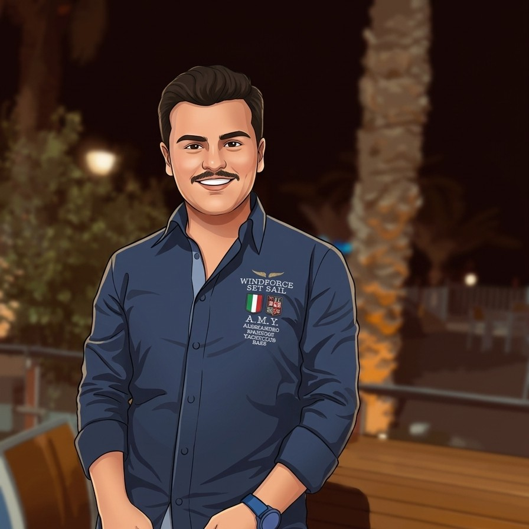

Zikar Al-Rihani
Major: Software Engineer
Academic Level: Third Year

Soft Skills
- Problem-solving
- Communication
- Adaptability
Favorite Languages, Tools & Frameworks
| Name | More Information |
|---|---|
| JavaScript | MDN JavaScript |
| HTML | MDN HTML |
| CSS | MDN CSS |
| Java | java.com |
| C++ | isocpp.org |
Email me: zjrihani24@cit.just.edu.jo
Where Do I See Myself in 4 Years?
In four years, I see myself working as a software engineer, building reliable applications and improving my skills in modern development practices. I want to gain practical experience working with teams on real projects and writing clean, maintainable code. I also plan to grow in areas such as web development and software design as technology continues to evolve. After building strong work experience, I hope to take on more responsibility and contribute to larger systems. My long-term goal is to become a skilled software engineer who creates useful software and solves real problems for users.